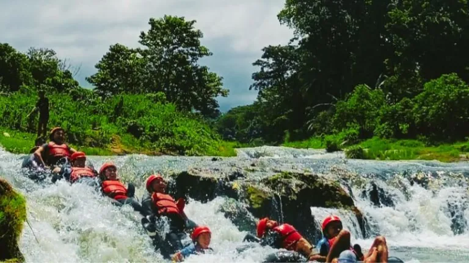
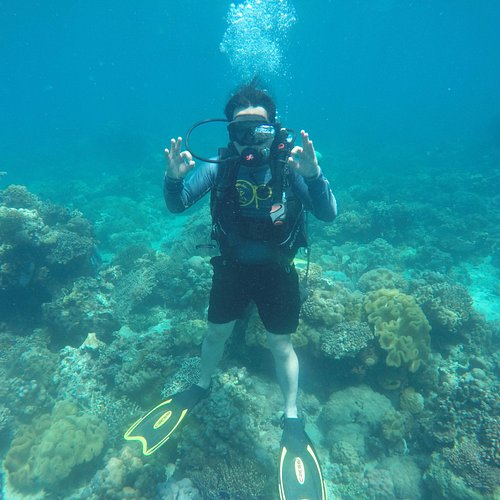
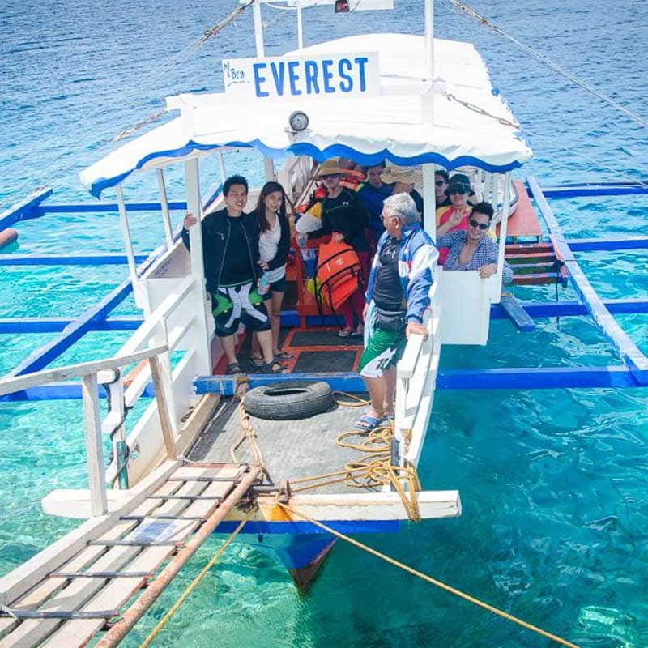

Dive into adventure with our thrilling water activities. Experience the rush of river tubing down the rapids of the Sibulan River in Santa Cruz, a favorite among adrenaline junkies. If you prefer the ocean, the coastal towns offer excellent spots for snorkeling and free-diving, where you can explore vibrant coral reefs and protected marine sanctuaries.
Brace yourself for the wild, heart-pounding rush of white-water river tubing.
Grab a snorkel and float above protected, colorful coral reefs teeming with life.
Charter a boat to explore hidden coves and untouched sandbars across the gulf.
While famous for its mountains, Davao del Sur holds incredible aquatic adventures. From the rushing, icy waters pouring down from Mt. Apo to the warm, biodiverse marine sanctuaries of the Davao Gulf, the water here demands to be explored. Adrenaline junkies flock to the Sibulan River in Santa Cruz for extreme water tubing, navigating fierce rapids on nothing but an inflated rubber tube. For a slower pace, the coastal municipalities like Malalag offer fantastic free-diving spots, where you can swim alongside schools of tropical fish and spot giant sea turtles in protected marine reserves.

Hold on tight as expert local guides steer you through rushing rapids and rocky drops.

Explore the vibrant underwater ecosystems and coral gardens just a short boat ride from shore.

Rent an outrigger boat and spend the day hopping between Passig Islet and hidden coastal beaches.
Fly to Francisco Bangoy International Airport in Davao City, then take a bus south.
November to May is the dry season — ideal for outdoor activities and beach trips.
Davao del Sur offers affordable accommodations, food, and transport options.